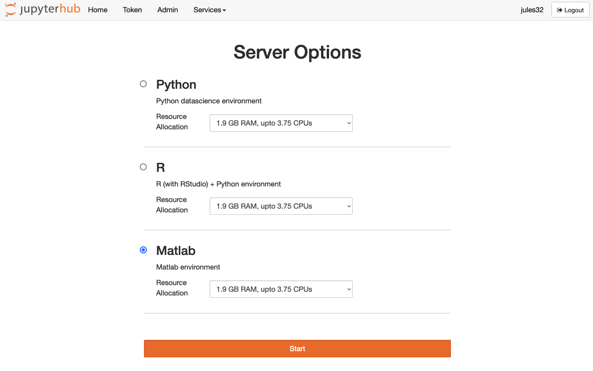
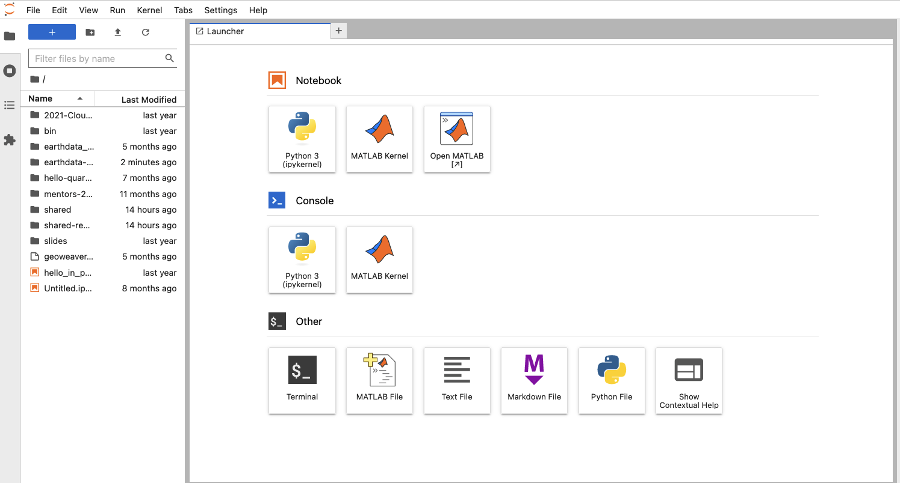
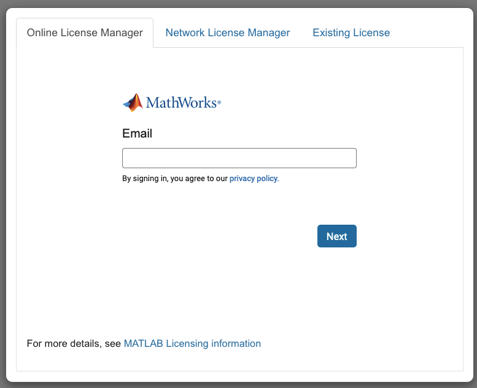
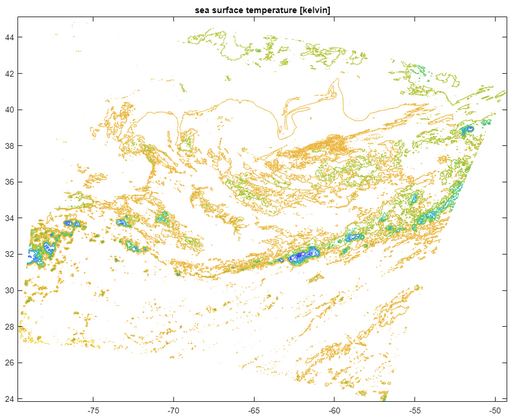

MATLAB Access Single NASA EarthData L2 NetCDF
This tutorial was written by Erin Robinson, Luis Lopez (NASA Openscapes) and Cedric Wannaz, Lisa Kempler (Mathworks).
Launch MATLAB in 2i2c JupyterHub
You’re able to use MATLAB in the 2i2c JupyterHub; you are able to bring your own license. If you’d like to access MATLAB from the Amazon Web Services Console, see details at the bottom of this page.



Credentials
Direct S3 access is achieved by passing NASA supplied temporary credentials to AWS so we can interact with S3 objects from applicable EarthData Cloud buckets. For now, each NASA DAAC has different AWS credentials endpoints. Below are some of the credential endpoints to various DAACs:
PODAAC: https://archive.podaac.earthdata.nasa.gov/s3credentials
GESDISC: https://data.gesdisc.earthdata.nasa.gov/s3credentials
LPDAAC: https://data.lpdaac.earthdatacloud.nasa.gov/s3credentials
ORNLDAAC: https://data.ornldaac.earthdata.nasa.gov/s3credentials
GHRCDAAC: https://data.ghrc.earthdata.nasa.gov/s3credentials
You will need your EarthData login to access these links. Create an account here: https://urs.earthdata.nasa.gov/users/new.
Prerequisites
- Save the following function in a text file called
loadAWSCredentials.txtto your MATLAB working folder or to any folder that is on MATLAB search path.
function s3Credentials = loadAWSCredentials(daacCredentialsEndpoint, login, password)
if nargin < 2 || isempty(login)
login = getenv('EARTHDATA_LOGIN') ;
end
if nargin < 3 || isempty(password)
password = getenv('EARTHDATA_PASSWORD') ;
end
% Get S3 credentials from EarthData
opts = weboptions('ContentType', 'json', 'HeaderFields', ...
{'Authorization', ['Basic ',matlab.net.base64encode([login,':',password])]});
s3Credentials = webread(daacCredentialsEndpoint, opts) ;
% Set relevant environment variables with AWS credentials/region
setenv('AWS_ACCESS_KEY_ID', s3Credentials.accessKeyId) ;
setenv('AWS_SECRET_ACCESS_KEY', s3Credentials.secretAccessKey) ;
setenv('AWS_SESSION_TOKEN', s3Credentials.sessionToken) ;
setenv('AWS_DEFAULT_REGION', 'us-west-2') ;
end- Define environment variables that specify your EarthData credentials by executing the following (updated with your credentials):
setenv("EARTHDATA_LOGIN","your_earthdata_login");
setenv("EARTHDATA_PASSWORD","your_earthdata_password");This can be done manually in the command window, in your MATLAB startup script, or in any MATLAB function/script that is executed before calling loadAWSCredentials. We recommend not to do it from your project main script, so you can share it without divulging your credentials.
- Search NASA EarthData and find the S3 link you want to access.
Accessing data
MATLAB HDF5 interfaces can access netCDF4 files stored in S3/Azure, while the netCDF interfaces cannot. The example below shows how to access a netCDF file using the HDF5 interfaces. SEe also this video: MATLAB and HDF5: Compression, Cloud, and Community – Ellen Johnson, MathWorks.
MATLAB provides two interfaces for accessing HDF5 datasets:
- High-level access functions make it easy to read and view data in an HDF5 file or write a variable from the MATLAB® workspace into an HDF5 file
- Low-level functions in the HDF5 library packages provide direct access to the more than 300 functions in the HDF5 C library from the HDF Group.
Low-level functions allow you to access advanced HDF5 functionality and bypasses I/O overhead in the high-level interface, but has a substantially higher learning curve unless already familiar with the HDF5 C API.
Example
- Find the relevant DAAC/endpoint for the dataset that you want to access. For the following dataset:
s3://podaac-ops-cumulus-protected/MODIS_A-JPL-L2P-v2019.0/20100619062008-JPL-L2P_GHRSST-SSTskin-MODIS_A-N-v02.0-fv01.0.ncThe relevant DAAC is PODAAC and the relevant endpoint is:
https://archive.podaac.earthdata.nasa.gov/s3credentials- Set AWS credentials using the
loadAWSCredentialsfunction, passing the relevant endpoint:
daacCredentialsEndpoint = "https://archive.podaac.earthdata.nasa.gov/s3credentials";
loadAWSCredentials(daacCredentialsEndpoint);These credentials are temporary; they expire every 30 minutes or so and must be refreshed periodically.
- Access data Define path of relevant file and dataset:
FILE_NAME = "s3://podaac-ops-cumulus-protected/MODIS_A-JPL-L2P-v2019.0/20100619062008-JPL-L2P_GHRSST-SSTskin-MODIS_A-N-v02.0-fv01.0.nc";
DATASET_NAME = "sea_surface_temperature_4um";
DATASET_PATH = "/" + DATASET_NAME ;First, check that you can access the dataset:
h5disp(FILE_PATH);If credentials and paths are correct, h5disp will display the structure of the data file.
Using MATLAB high-level HDF5 interface
units = h5readatt(FILE_NAME,DATASET_PATH,"units");
fill_value = h5readatt(FILE_NAME,DATASET_PATH,"_FillValue");
name = h5readatt(FILE_NAME,DATASET_PATH,"long_name");
data = h5read(FILE_NAME,DATASET_PATH);
data(data == fill_value) = NaN;
lat = h5read(FILE_NAME,"/lat");
lon = h5read(FILE_NAME,"/lon");Build a map using contour:
contour(lon,lat,data);
title(sprintf("%s [%s]",name,units));
Using MATLAB low-level HDF5 interface
% Open file and root group
file_id = H5F.open(FILE_NAME,"H5F_ACC_RDONLY","H5P_DEFAULT");
root_id = H5G.open(file_id,"/") ;
% Open/read sea surface temperature (SST) dataset
data_id = H5D.open(file_id,DATASET_PATH);
data=H5D.read(data_id,"H5T_NATIVE_DOUBLE","H5S_ALL","H5S_ALL","H5P_DEFAULT");
% Open/read/close SST units attribute
attr_id = H5A.open_by_name(root_id,DATASET_NAME,"units");
units = H5A.read(attr_id,"H5ML_DEFAULT");
H5A.close(attr_id);
% Open/read/close SST long_name attribute
attr_id = H5A.open_by_name(root_id,DATASET_NAME,"long_name");
long_name = H5A.read(attr_id,"H5ML_DEFAULT");
H5A.close(attr_id);
% Open/read/close SST _FillValue attribute
attr_id = H5A.open_by_name(root_id,DATASET_NAME,"_FillValue");
fillvalue = H5A.read(attr_id,"H5T_NATIVE_DOUBLE");
H5A.close(attr_id);
% Close SST dataset and root group
H5D.close(data_id);
H5G.close(root_id);
% Open/read/close latitude dataset
lat_id = H5D.open(file_id,"lat");
lat = H5D.read(lat_id,"H5T_NATIVE_DOUBLE","H5S_ALL","H5S_ALL","H5P_DEFAULT");
H5D.close(lat_id);
% Open/read/close longitude dataset
lon_id = H5D.open(file_id,"lon");
lon = H5D.read(lon_id,"H5T_NATIVE_DOUBLE","H5S_ALL","H5S_ALL","H5P_DEFAULT");
H5D.close(lon_id);
% Close file
H5F.close(file_id);
% Replace fill value with NaN
data(data==fillvalue) = NaN;
% Plot contour map
contour(lon,lat,data);
title(sprintf("%s [%s]",long_name{1},units{1}));Launch with AWS Console
An alternative is to launch with the AWS Console. This chapter is for research teams currently working in MATLAB with NASA EarthData and wanting to take advantage of doing analysis in the Cloud. Our initial focus is on Amazon Web Services (AWS). For general, background on the Cloud and NASA Earthdata’s migration to the Cloud, checkout earlier chapters of the cookbook [TO DO: Add a link and specific reference].
Prerequisites
MATLAB License - You must have access to a MATLAB license that allows for access to the cloud. To check your license, in the MATLAB command line enter:
ver -supportAWS Account - For the current experiments, we will access the AWS console, so you need an AWS account. It is free to set up, but will require a credit card linked to the account. https://aws.amazon.com/
AWS Region: We are working in AWS US-West-2 because NASA Earthdata is hosted in US-West-2. If there is an option to pick an AWS region, pick US-West-2.
GitHub Account - If you want to use GitHub as part of your workflow and don’t already have an account, create a GitHub account: https://github.com/
NASA Earthdata login - Create an account here: https://urs.earthdata.nasa.gov/users/new
Microsoft Remote Desktop - When we spin up the AWS virtual machine with MATLAB, we will need to have a remote desktop option. These how-to’s were done on a mac and we tested the free Microsoft Remote Desktop. Download for macs
Prerequisite: AWS EC2 Key Pair
This isn’t included in the numbered prereq list above because it is a bit more involved than creating an account or knowing what region we work in. You need to create an SSH Key Pair in the region you want to work in. This is a one-time step that you won’t need to do each time you launch the stack.
Log in to AWS
In the search box enter, ‘Create AWS Key Pair.’ Under features choose ‘Key Pairs’ (AWS help)

Check that the top bar says, ‘Oregon’ (AKA - US-West-2) and if not, click that down arrow to choose US-West-2. Then click the orange ‘Create key pair’ button.

Troubleshooting tip: If you create the key outside of the region you want to work in, it will not show up when you launch the stack below.On the form - give your key a name, choose the RSA and PEM options (these should be the defaults.)
Ok - now we are ready to start!
Creating the AWS Stack with MATLAB
Note: The first time I launched the AWS Stack it seemed to take for-ever. I thought “how could I possibly need to do this every time I want to use MATLAB in the cloud?” It does speed up, eventually it get’s a bit faster. I also have learned to plan a bit better - if I know I want to do some work, I get the launched, have coffee, and when I come back it’s ready to roll.
From this MATLAB GitHub page click the release for 2022a under deployment steps.
This brings up a list of MATLAB on Amazon Web Services (Linux VM). Choose & click the ‘launch stack’ link for US-West-2.

This opens the ‘Quick create stack’ form based on the MATLAB template. That means that when you launch this stack it will come with MATLAB on the desktop. Fill out the form to create the AWS stack:
Give the stack a name like ‘matlab-test’
Keep the pre-filled options the same for now.
Remote Access:
“Allow Connections From:” You will need to know your IP address. You can google, “what’s my IP address?”
Enter your IP address followed by a /32 like this -> [my.IP.address/32]
In the SSH Key Pair - the key pair you created above should show up in the drop down. If it doesn’t show up, see the troubleshooting tip.
Pick a remote password. This is not your AWS password or your GitHub password, this is the password that you will use to login with the microsoft remote desktop (username: ubuntu)
Network configuration
There is one VPC option - choose that
For subnet - I pick the first one and it works. So pick the first option.
Autoshutdown hasn’t worked for me so far, so for now I leave this set as never and delete the stack when I am finished.
Check the box that “I acknowledge that AWS CloudFormation might create IAM resources.”
Click ‘Create stack’
Wait…. [~ 10 minutes]
You can check the status by clicking the refresh button on the right corner

Launch the AWS Stack with Microsoft Remote Desktop
Once the stack is created it will say ‘Create_complete’ on the left side.

Click the outputs tab and copy the value text. It will start with ‘ec2-…’
Open Microsoft Remote Desktop
Click the + to add a PC
Paste the value text as the PC Name
Click on the grey box of your new computer in the remote desktop window
A login will pop up

Username is ubuntu
Password is the password you set in 3.3.3 above in the section on ‘Creating AWS Stack’
A certificate message will pop up - say ok
The desktop will launch
Wait … [~2 mins]
Open MATLAB on Remote Desktop
- Click the MATLAB icon on the remote desktop

- Wait … [~4 mins]
- Login with your MATLAB credentials
- You are in!
Search NASA Earthdata and find the S3 link you want to access
Set AWS Environment Variables - Go to the link above for the Access key, secret access key and token.
Copy and past those variables into the code below
setenv('AWS_ACCESS_KEY_ID', 'REPLACE WITH PODAAC ACCESS KEY');setenv('AWS_SECRET_ACCESS_KEY', 'REPLACE WITH PODAAC SECRET KEY');setenv('AWS_SESSION_TOKEN', 'REPLACE WITH PODAAC SESSION TOKEN');setenv('AWS_DEFAULT_REGION', 'us-west-2');NOTE: These expire ever 30 mins or so and this step needs to be done. We are searching for a better method.
In MATLAB on AWS only the HDF commands work
FILE_NAME = 's3://podaac-ops-cumulus-protected/MODIS_A-JPL-L2P-v2019.0/20100619062008-JPL-L2P_GHRSST-SSTskin-MODIS_A-N-v02.0-fv01.0.nc';file_id = H5F.open(FILE_NAME, 'H5F_ACC_RDONLY', 'H5P_DEFAULT');This code works to read the file - Copy each section into the MATLAB command
NOTE: We need a way to find all variables in a given netcdf file. I used the python code to find variables and then brought it here.DATAFIELD_NAME='sea_surface_temperature_4um';data_id = H5D.open(file_id, DATAFIELD_NAME);data=H5D.read(data_id,'H5T_NATIVE_DOUBLE', 'H5S_ALL', 'H5S_ALL', 'H5P_DEFAULT');% Read units.ATTRIBUTE = 'units';attr_id = H5A.open_name(data_id, ATTRIBUTE);units = H5A.read(attr_id, 'H5ML_DEFAULT');H5A.close(attr_id);% Read long_name.ATTRIBUTE = 'long_name';attr_id = H5A.open_name (data_id, ATTRIBUTE);long_name=H5A.read (attr_id, 'H5ML_DEFAULT');H5A.close(attr_id);% Read the fill value.ATTRIBUTE = '_FillValue';attr_id = H5A.open_name(data_id, ATTRIBUTE);fillvalue=H5A.read(attr_id, 'H5T_NATIVE_DOUBLE');H5A.close(attr_id);% Read latitude data.LAT_NAME='lat';lat_id=H5D.open(file_id, LAT_NAME);lat=H5D.read(lat_id, 'H5T_NATIVE_DOUBLE', 'H5S_ALL', 'H5S_ALL', 'H5P_DEFAULT');% Read longitude data.LON_NAME='lon';lon_id=H5D.open(file_id, LON_NAME);lon=H5D.read(lon_id, 'H5T_NATIVE_DOUBLE', 'H5S_ALL', 'H5S_ALL', 'H5P_DEFAULT');% Close and release resources.H5D.close(data_id);H5D.close(lat_id);H5D.close(lon_id);H5F.close(file_id);% Replace the fill value with NaN.data(data==fillvalue) = NaN;Create an image
contour(data);
Shutdown your AWS Stack
After each session you need to turn off the AWS Stack. If you forget this step and leave it running it is like keeping a computer on for the month. For the large instance it costs $0.5/day so it’s a few dollars a month.
Go back to AWS
Search for stack
Click on the name of your stack
Click ‘Delete’

Confirm the delete